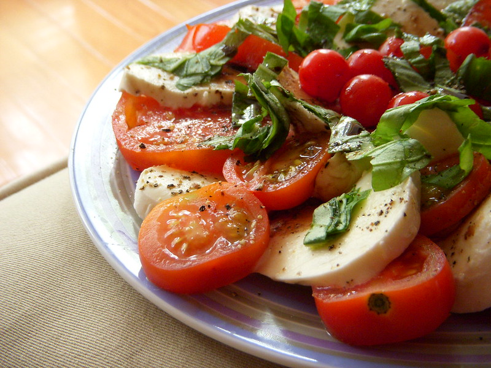

Interactive Media 1 Recipe List
Cuisine
Skill Level
Time To Cook
Dietary Preference
Serves
Baked Puttanesca Risotto with Olives, Lemon and Parsley

"Spaghetti Puttanesca con Tonno" by
avlxyz is licensed under
CC BY-NC-SA 2.0 


By Hetty Mckinnon
Go To Recipe
Publisher: ABC Everyday
Cuisine: Italian
Time to Cook: 0:10 prep time - 0:30 cook time
Skill Level: Low
Course: Main
Servings: 4 to 6
Dietary: Vegetarian
Date Published: 3 Jul 2019
Date Updated: 29 Jul 2019
Special Equipment: Ovenproof Dutch oven
Caprese Salad with Slow-Roasted Tomatoes, Rocket and Basil Gremolata

"Caprese Salad" by
wEnDaLicious is licensed under
CC BY-NC-ND 2.0

By Hetty Mckinnon
Go To Recipe
Publisher: ABC Everyday
Cuisine: Italian
Time to Cook: 75-105 mins
Skill Level: Low
Course: Salad
Servings: ?
Dietary: Vegetarian
Date Published: 4 Feb 2019
Date Updated: 17 Dec 2020
Special Equipment: N/A
Crispy Enoki and Onion Fritters with Thai Curry Mayo Recipe

"brown enoki mushrooms" by
chotda is licensed under
CC BY-NC-ND 2.0
By J. Kenji López-Alt
Go To Recipe
Publisher: Serious Eats
Cuisine: Fusion
Time to Cook: 30 mins
Skill Level: Medium
Course: Snack, Savoury
Servings: 4 to 6
Dietary: Vegetarian
Date Published: Oct. 9, 2012
Date Updated: Aug. 30, 2018
Special Equipment:
Fluffy Steamed Buns filled with Sweet Red Beans

"Sweet red bean bun 豆沙包 AUD2 - Wing Loong, Melbourne" by
avlxyz is licensed under
CC BY-NC 2.0
By Maangchi
Go To Recipe
Publisher: Maangchi
Cuisine: Korean
Time to Cook: ~ 11 hours preperation. 15 mins to cook
Skill Level: Medium
Course: Snack, Sweet
Servings: 10 pieces
Dietary: Vegetarian
Date Published: December 19, 2017
Date Updated: August 11, 2021
Special Equipment:
The Food Lab's Chocolate Chip Cookies

"Browned butter chocolate chip cookies" by
grongar is licensed under
CC BY 2.0
By J. Kenji López-Alt
Go To Recipe
Publisher: Serious Eats
Cuisine: Western
Time to Cook: 45mins prep. 35mins to cook
Skill Level: Low
Course: Snack, Sweet
Servings: 28 cookies
Dietary: Vegetarian
Date Published: Dec. 20, 2013
Date Updated: Sep. 16, 2022
Special Equipment:
Grilled Cheese With Kimchi Recipe

"Lefty’s Food Truck" by
cherrylet is licensed under
CC BY-NC-SA 2.0
By J. Kenji López-Alt
Go To Recipe
Publisher: Serious Eats
Cuisine: Fusion
Time to Cook: 12 mins
Skill Level: Low
Course: Snack, Savoury
Servings: 1 sandwich
Dietary: Vegetarian
Date Published: Apr. 28, 2013
Date Updated: Sep. 21, 2022
Special Equipment:
Hands-Off Pork and Beans

"spicy pork and bean chili" by
telepathicparanoia is licensed under
CC BY-ND 2.0
By Carla Lalli Music
Go To Recipe
Publisher: Carla Lalli Music
Cuisine: American
Time to Cook: overnight preperation. 4 hours to cook
Skill Level: Medium
Course: Main
Servings: 6 generous servings
Dietary: Meat based
Date Published: Dec 28, 2021
Date Updated: N/A
Special Equipment:
Shakshuka (North African–Style Poached Eggs in Spicy Tomato Sauce)

"Shakshuka" by
joyosity is licensed under
CC BY 2.0
By J. Kenji López-Alt
Go To Recipe
Publisher: Serious Eats
Cuisine: North African
Time to Cook: 35 mins
Skill Level: Medium
Course: Main
Servings: 4 to 6
Dietary: Vegetarian
Date Published: Sep. 28, 2016
Date Updated: Aug. 10, 2022
Special Equipment:
Sweet, Sour, & Spicy Korean Fried Chicken

"Bon Chon Korean Fried Chicken Wings" by
powerplantop is licensed under
CC BY-NC-ND 2.0
By Maangchi
Go To Recipe
Publisher: Maangchi
Cuisine: Korean
Time to Cook: 45-50 minutes
Skill Level: Medium
Course: Main
Servings: 3 to 4
Dietary: Meat based
Date Published: January 27th, 2011
Date Updated: August 3, 2021
Special Equipment:
The Ultimate Beef Stroganoff Recipe

"Beef Stroganoff" by
cobalt123 is licensed under
CC BY-NC-SA 2.0
By J. Kenji López-Alt
Go To Recipe
Publisher: Serious Eats
Cuisine: Russian
Time to Cook: 55 mins
Skill Level: Medium
Course: Main
Servings: 4 servings
Dietary: Meat based
Date Published: Jan. 9, 2015
Date Updated: Aug. 27, 2020
Special Equipment:
Vegetarian Carbonara with Mushrooms, Miso and Parmesan

"Mushroom carbonara" by
Like_the_Grand_Canyon is licensed under
CC BY-NC 2.0
By Hetty Mckinnon
Go To Recipe
Publisher: ABC Everday
Cuisine: Fusion
Time to Cook: 0:15 prep time - 0:15 cook time
Skill Level: Low
Course: Main
Servings: 4
Dietary: Vegetarian
Date Published: 9 Jul 2020
Date Updated: 26 Feb 2021
Special Equipment: